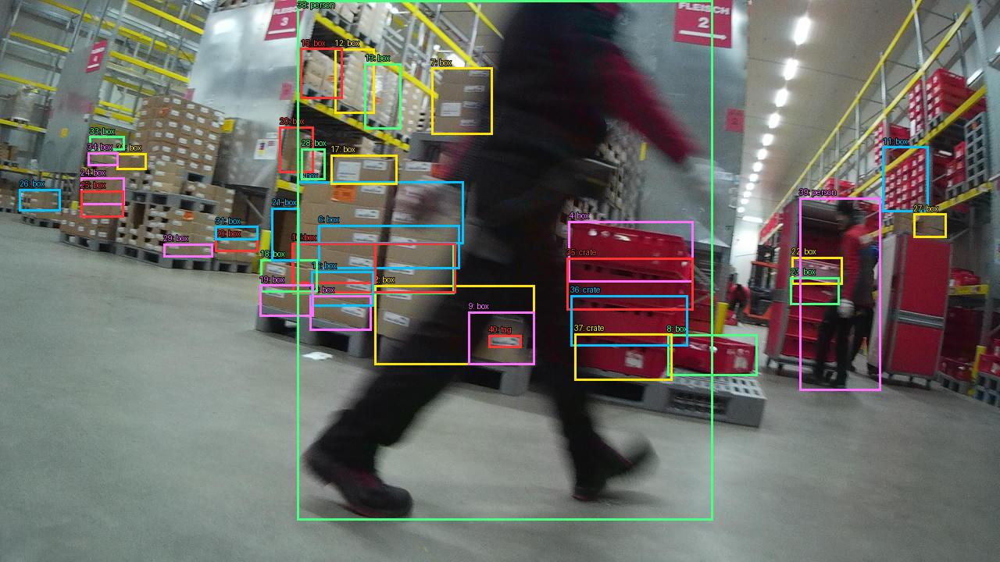
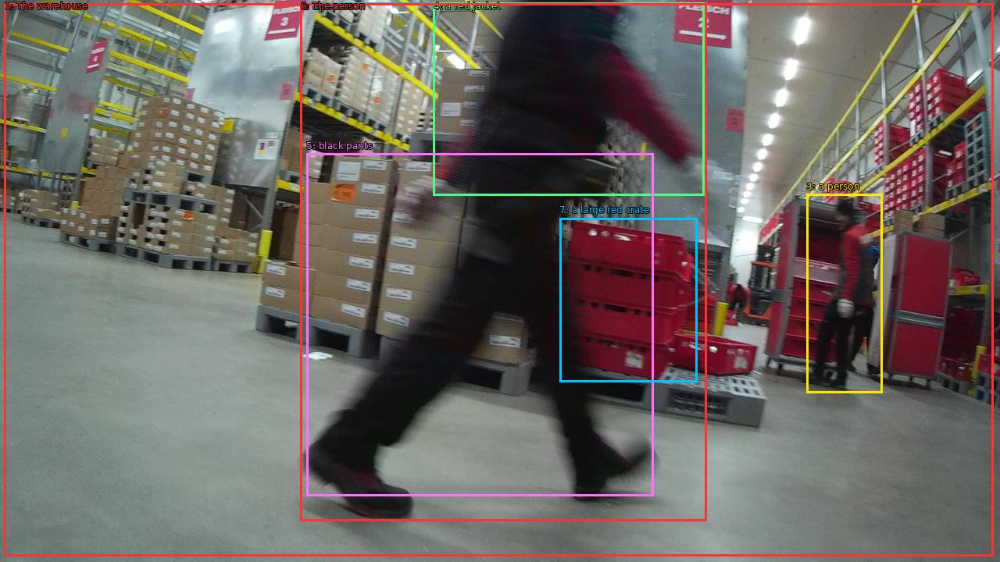

The image shows a large warehouse with rows of shelves and racks filled with cardboard boxes. The warehouse appears to be a large industrial space with high ceilings and bright lights. In the center of the image, there is a person walking through the warehouse, wearing a red jacket and black pants. The person is carrying a large red crate in their hand and is walking towards the right side of the frame. The image is taken from a low angle, giving a sense of movement and energy.


Original · Caption raw · Grounding raw · Koordinate
Številke so lokalni ID regije. Dolge slikovne oznake so skrajšane; spodaj so celotne fraze. Napovedane regije se lahko prekrivajo ali opisujejo skupine.
| ID | Celotna fraza | bbox xyxy |
|---|---|---|
| 1 | The warehouse | [5.759999752044678, 4.680000305175781, 1271.679931640625, 712.4400024414062] |
| 2 | a person | [384.6399841308594, 3.9600000381469727, 904.3200073242188, 667.0800170898438] |
| 3 | a person | [1032.3199462890625, 248.760009765625, 1129.5999755859375, 503.6400146484375] |
| 4 | a red jacket | [554.8800048828125, 3.2400002479553223, 901.760009765625, 250.20001220703125] |
| 5 | black pants | [392.3199768066406, 196.92001342773438, 836.47998046875, 635.4000244140625] |
| 6 | The person | [384.6399841308594, 4.680000305175781, 904.3200073242188, 667.0800170898438] |
| 7 | a large red crate | [716.1599731445312, 279.0, 892.7999877929688, 489.96002197265625] |